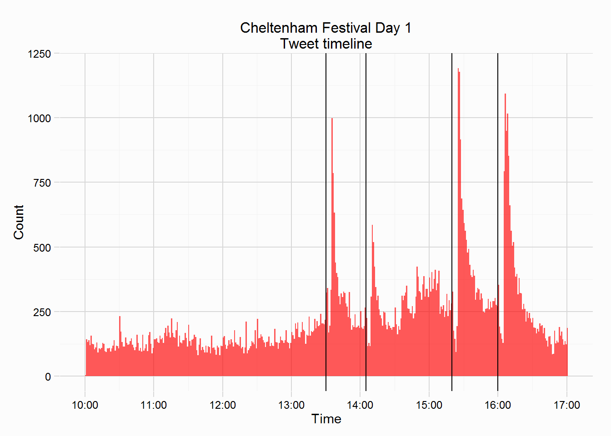

Over the course of the opening day of the 2015 Cheltenham Festival, 94463 tweets were collected They were collected if they mentioned any of the runners in the Championship Races (Grade 1s), or a number of other related words. The opening day featured more tweets than the other three days, it likely attracts casual fans of the sport to tweet, while the more hardy/passionate fans will remain engaged across the four days.
The horses ‘tracked’ on day one, are shown in the table below:
A small footnote, tracking some horses by name will undoubtedly collect tweets that were not about the Festival or the horse, an example of this is the horse Smashing, running in the Arkle. The word smashing is very likely to appear in a tweet outside of racing, compared to a tweet that mentions Dunraven Storm (from the same race). “Smashing” featured in 1953 tweets, a fair number of these were about ITV this morning and marvinhumes and rochellethesats “smashing” it.
| Day | Race | Time | Horses | n |
|---|---|---|---|---|
| 1 | Supreme Novices | 13:30 | Alvisio Ville, Bentelimar, Douvan, Jollyallan, L´Ami Serge, Qewy, Seedling, Shaneshill, Sizing John, Some Plan, Tell Us More, Velvet Maker | 12 |
| 1 | Arkle | 14:05 | Clarcam, Court Minstrel, Dunraven Storm, God´s Own, Josses Hill, Sail By The Sea, Sgt Reckless, Smashing, Three Kingdoms, Un De Sceaux, Vibrato Valtat | 11 |
| 1 | Champion Hurdle | 15:20 | Arctic Fire, Bertimont, Faugheen, Hurricane Fly, Jezki, Kitten Rock, The New One, Vaniteux | 8 |
| 1 | Mares Hurdle | 16:00 | Annie Power, Bitofapuzzle, Carole´s Spirit, Centasia, Dark Spirit, Emily Gray, Glens Melody, Hidden Identity, L´Unique, Mischievous Milly, Pass The Time, Polly Peachum, Sureness, Swing Bowler, The Govaness, The Pirate´s Queen | 16 |
The plot below shows the timeline from the opening day, included in the plot are four vertical lines charting the start times of the various races. These races were the Supreme Novices (13:30), the Arkle (14:05), the Champion Hurdle (15:20) and the Mares Hurdle (16:00). It becomes clearer that the peaks are post race reactions, but also interesting is the drop in the number of tweets sent between the race starting and the race being completed.

The two plots below shows the number of tweets that mention a runner from each Championship race, and the most mentioned horses. The most tweeted about race was the Champion Hurdle, with 21293 tweets, closely followed by the Mares Hurdle with 19807. To the right is a plot showing the number mentions a runner received.
I’ll only look at two races from Day One, the Champion Hurdle and the Mares Hurdle (but if anyone wants to see other races looked at let me know and I’ll try add them).
The Champion Hurdle featured a relatively small field compared to other Championship races, with just 8 runners, won by the Willie Mullins trained Faugheen. The plots below shows the number of tweets sent per minute that menioned one of the 8 runners, and the sentiment of those same tweets over 10minute intervals. Naturally the volume of tweets increase as the race is completed, also plotted in the sentiment plot is a loess curve, showing that sentiment takes quite a sharp upturn after the race is completed.
Also of interest is which horses were popular on twitter, is there any wisdom in the twitter crowd? The plots below show the number of tweets that mention each of the 8 runners, the plot on the left is restricted to those tweets sent before the race, the plot to the right is tweets after the race. Faugheen was a heavy favourite on twitter and was mentioned in 65.4% of tweets that mentioned any runner in the race. Faugheen was the strong favourite for the race, being sent off at 4/5 (implied ~55% chance of victory) by the bookies. Faugheen was the winner, and it’s no surprise that he dominated the post race mentions in 85.8% of tweets.
The Mares Hurdle featured a larger field compared to the Champion Hurdle, but it featured a horse who dominated the tweets both pre and post race, that horse was another Willie Mullins trained horse, Annie Power. If you read my daily overview (see here) then you may recall the sentiment nosedived on Day one at around 16:00, this race and Annie Power is the reason.
The plots below shows the number of tweets sent per minute that menioned one of the 16 runners, and the sentiment of those same tweets over 10minute intervals. Discussion around the race took a sharp increase around 15:25, shortly after the Champion Hurdle had finished, this race is typically not that widely discussed, but the fact Willie Mullins had won the 3 previous Grade 1 races on the card, fuelled discussion.
Anyone who watched, or read about the days action, won’t have missed one of the most dramatic climaxes to a Festival race in memory. Annie Power was the heavy favourite (1/2 with bookies) and given her popular trainer she was set to deliver a significant blow to the bookies, she powered through her race and swung into the home turn still on the bridle. Approaching the last, she just needed to pop over and walk home… she fell, and with that crashing fall the sentiment of twitter crowd slumped to the ground with her. A replay of the race is here for those who missed it.
The sentiment of bookies was probably the polar opposite!!
Also of interest is which horses were popular on twitter, is there any wisdom in the twitter crowd? The plots below show the number of tweets that mention each of the 16 runners, the plot on the left is restricted to those tweets sent before the race, the plot to the right is tweets after the race. Annie Power was a heavy favourite on twitter and was mentioned in 90.9% of tweets that mentioned any runner in the race. As mentioned Annie Power was a very strong favourite for the race. The eventual winner was Glen’s Melody, but the post race talk was all about Annie Power and her last flight fall,, she dominated the post race mentions in 89.1% of tweets.